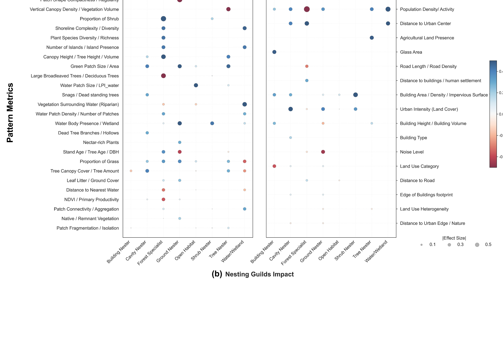

Urban form and bird biodiversity
Cities are living systems where people, buildings, and nature interact, and birds are a good mirror of that balance. My doctoral research asks how the form of a city shapes its bird life, and why the answer differs so much from one city to another.

Cities shape bird life in more than one dimension
How much green a city has is only the starting point. Whether birds thrive depends on what kind of green it is, how it is arranged, and what the built environment around it does to them. Before adding new evidence, I audited what the field had already gathered, sorting every study by which urban component it measured, at what scale, and against which bird response.

of all evidence is green space. Water is 7.5 percent, though its pooled association is no weaker.
is measured below 500 metres. Landscape and regional processes stay underrepresented.
counts species, individuals, or presence. Functional diversity is 5.6 percent.
measures an ecological process directly. Resource-access pathways are about 2 percent.
Low-hanging fruit: the field has accumulated the easiest evidence, not the most complete evidence.
Built form works as a filter
The built environment does not simply push biodiversity down. It sorts it. Glass and dense building help birds that nest on buildings, while the same features stress ground-nesting and forest birds, which noise suppresses further.
Built form supports some guilds and constrains others.
Blue is a positive effect, red negative, marker size is effect size. Nature features left, urban and stress features right in each half.


The signal comes from structure more than extent

Where green does help, the signal comes from its structure more than its extent. Taller and more varied canopies, standing deadwood, and how patches are aggregated matter more than coverage alone.
The same feature can also act through different ecological processes, so its effect is not fixed. Tree canopy, for instance, supports resource access and reproduction, and helps dispersal even more.
Reading green in three dimensions and across its spatial pattern, and looking at the processes behind it, is what sustains diversity over the long run, in species, in function, and in evolutionary history.
Taken together, these findings argue for a multidimensional reading of urban biodiversity. Green amount sets the baseline, built form filters who can stay, and the structure and arrangement of green decide how much life a city can hold.
Different birds live at different scales
Studying how urban pattern affects birds depends on two choices that are easy to overlook. One is scale, the distance at which each bird group responds to its surroundings. The other is spatial representation, the kind of unit we use to read the city. That unit can be geometric, like a buffer or a grid, or it can follow urban form, like morphological zones.
Because a bird record is only a point, we always have to draw some unit around it to measure pattern, and whether that unit is geometric or morphology-based shapes how we read the link between pattern and biodiversity.
When we measured the environment around each bird record, guilds reached their strongest response at very different distances. Granivores and piscivores responded most at fine scales, around 250 metres. Carnivores and omnivores needed much wider surroundings, up to 2000 to 2500 metres. Frugivores and insectivores sat in between.
Each guild effectively senses the city at the size of its own living range.

Do fruit-eating birds do better where trees are taller?
Same city, same records, same guild. What changes is the unit the city is divided into, and with it the response the model can express. In every panel the horizontal axis is canopy height in metres and the shaded band is the 95 percent confidence interval. What the vertical axis counts is not the same in all three, and that is the point.

Equal squares, each asked how many fruit-eating species it holds. The vertical axis is predicted richness per square, and the curve is still climbing at the tallest squares. Read alone it says: keep growing trees taller.

Cut along real built character, so a low-rise neighbourhood and a tower district are never averaged together. Predicted richness per zone flattens above roughly twenty-five metres. Taller still helps, with diminishing returns.

The question changes: a circle around each sighting, and the model asks how likely fruit-eaters are to appear at all. The dashed line marks the peak, near twenty-five metres, after which likelihood falls. An optimum, not a maximum.
Why three honest models give three different shapes
Singapore. Citizen-science occurrence records with high-resolution urban pattern data; sampling effort carried as a model offset.
Species richness per unit, modelled with Random Forest, negative binomial GLM, and Poisson GAM response curves. Grid grains from 500 to 5000 m; 2000 to 2500 m was the most balanced window.
Guild occurrence as a binary response against generated background samples, modelled with logistic regression and GAM partial effects.
GAMs fitted in R with mgcv (Wood, 2017); predictors as smooth terms, coordinates controlling broad-scale spatial structure. Selected by fivefold cross-validation, checked on deviance explained, McFadden R², and residual spatial autocorrelation.
The direction is robust: fruit-eating birds need tall trees, and all three units say so. What differs is the functional form, and the form is what a planting brief has to commit to. Rising without a ceiling argues for maximising height; a plateau argues for reaching a threshold and spending the rest of the budget elsewhere; a peak near twenty-five metres argues for a target rather than a maximum. All three fits are sound on their own terms, with comparable deviance explained and smooth terms that stay within their confidence bands, so the divergence is not a fitting artefact. It comes from the unit: grid cells average canopy over a fixed footprint, morphological zones group ground that already shares a built character, and buffers weight whatever happens to sit near a sighting. The buffer curve also answers a slightly different question, the probability that the guild is present rather than how many species a unit holds, which is itself part of what the unit decides.
The analytical unit is part of the finding. Report it with the result, and compare units before comparing conclusions.
The unit changes which factors look important
One thing stayed stable across all units: proximity to resources. Distance to water and distance to canopy mattered consistently, because how close a resource is does not depend on how we draw patch boundaries. Outside that stable core, each unit privileged a different kind of metric, and it did so differently for each guild.

Match the unit to the question, and report it with the result
Buffers elevated immediate resource context, such as the core area and largest patch of water nearby. Grids elevated patch geometry and spacing, such as building fractal dimension and the variation in distances between buildings. Morphological zones retained form-linked measures, such as building cohesion, canopy contiguity, and canopy-height variance. The reshuffling was strongest for carnivores and insectivores, while frugivores kept the most consistent core.
Match the spatial unit to the question. Use a buffer for local habitat use and scale of effect, a grid for standardized citywide mapping and comparison. Reporting the unit becomes as important as reporting the result, because a finding only travels if others know how the city was measured. One reassurance runs through all of this: resource accessibility, how close water and canopy are, stayed important no matter which unit we used, so proximity is a dependable signal to build on.
Morphological units such as Local Climate Zones are the most useful, because they are multidimensional. A single zone combines several spatial characteristics at once, high or low rise, green or grey dominant, compact or open, and its organic, form-following boundaries align well with how administrative and planning areas are actually drawn.
This makes the morphological reading easy to carry directly into planning, where decisions are made in terms of urban form rather than abstract metrics.
The same ingredients, arranged differently in every city
Once every city is measured the same way, a sharper question comes into view. Which links between urban form and bird life hold everywhere, and which depend on where the city is? Across sixty-eight cities placed on equal footing, a handful of features mattered almost everywhere. What differed was how they combined, which was rarely the same from one city to the next.
A small number of features carried most of the signal: canopy height and cover, building height and footprint, and how close water is. Their presence was consistent, but their behaviour was not.
Canopy height is a good example. It did not help birds everywhere. In some cities taller canopy went with more bird species, in others with fewer, so its effect changed from one place to another rather than pointing the same way across the world.
A feature that supported birds in one city could work against them in another.

A pattern that looks good in one region cannot be assumed to behave the same way in another

Some of this variation was not noise. It followed the wider setting each city sits in. How a city's internal pattern reads for birds depends in part on the regional context around it, not only on what happens inside its boundary. A pattern that looks good in one region cannot be assumed to behave the same way in another.
For comparison across cities to mean anything, we cannot fall back on a single universal rule. The drivers recur, but how they act is context-dependent. Reading a city's bird life well means reading it together with the landscape it sits in.
Urban bird diversity is multidimensional, nonlinear, and context-dependent, not a function of green area
Habitat quality and structural complexity, particularly vertical vegetation structure, plant diversity, and mature or remnant habitat, exert stronger and more consistent effects than habitat area alone. Built environments are not background disturbance but active ecological filters, excluding sensitive species while favouring more adaptable guilds.
This supports biodiversity-sensitive planning that moves past planar greening targets, and it points to what urban ecology still needs: three-dimensional metrics, organism-centred scale, matrix interactions, and cities outside the temperate Northern Hemisphere.